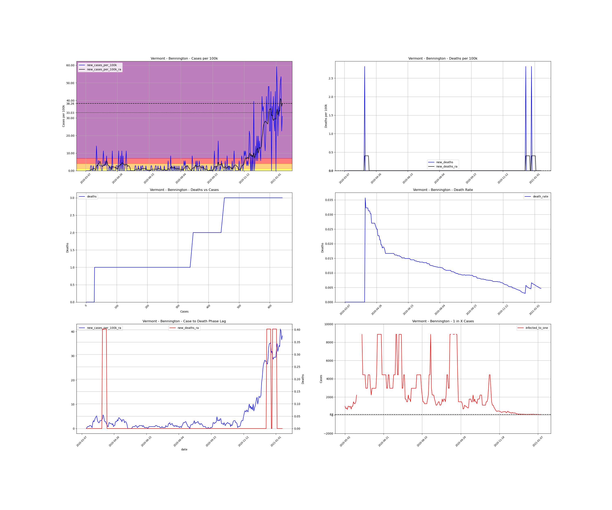
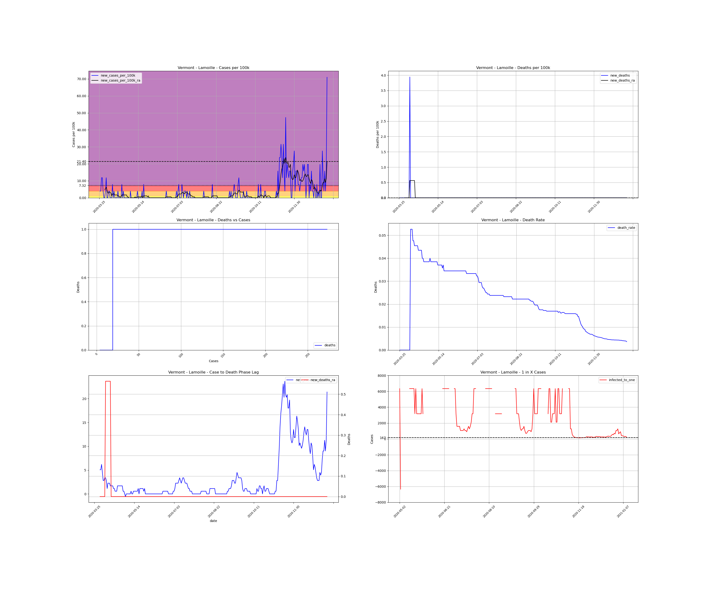
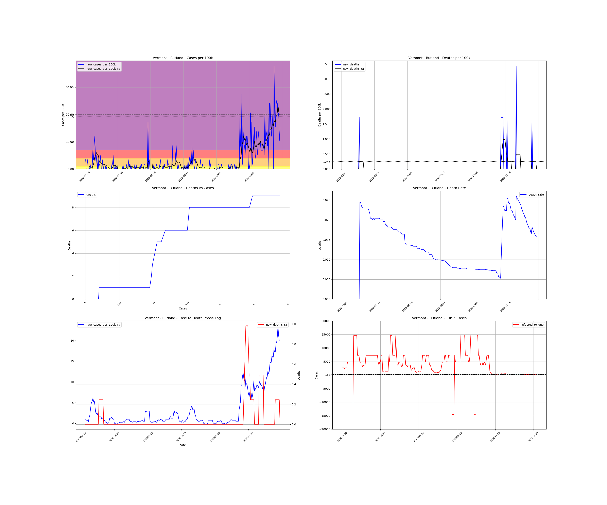

<h1>Vermont Counties</h1><table><tr><td><a id="#Addison">Addison</a></td></tr><tr><td><a id="#Bennington">Bennington</a></td></tr><tr><td><a id="#Caledonia">Caledonia</a></td></tr><tr><td><a id="#Chittenden">Chittenden</a></td></tr><tr><td><a id="#Essex">Essex</a></td></tr><tr><td><a id="#Franklin">Franklin</a></td></tr><tr><td><a id="#Grand Isle">Grand Isle</a></td></tr><tr><td><a id="#Lamoille">Lamoille</a></td></tr><tr><td><a id="#Orange">Orange</a></td></tr><tr><td><a id="#Orleans">Orleans</a></td></tr><tr><td><a id="#Rutland">Rutland</a></td></tr><tr><td><a id="#Washington">Washington</a></td></tr><tr><td><a id="#Windham">Windham</a></td></tr><tr><td><a id="#Windsor">Windsor</a></td></tr></table>